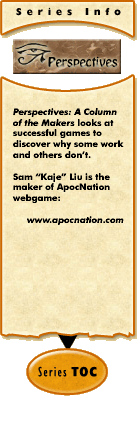

|
Perspectives #5: Management and the Managedby Sam Liu This month we're dealing with the balance of control between players and staff. Often in many games, players will complain about admin interference. But today I'm not talking about things like admins helping players cheat or showing favoritism. I'm not even really trying to say anything about admins deleting accounts. I'm talking about admin interference as in, who should be able to choose what, player or admin? Like admins might dictate who you can attack, what abilities you can use, and what you can do. And the thing that comes with that is speech; should the admin control what you say? Well to start, let me give you an example I've encountered recently. In my utopia account. I've read that the creator bans players forcing other players to use 3rd party applications. However some kingdoms use a tool called "Utopiapimp" and require all members of the kingdom to use it and post their latest provincal status. Should this be disallowed? It is, after all, for the sake of activity in the game. It makes the game fun for the people who are using it and bad for the people who are getting killed for not using it. These topics are highly debated and disscussed but today I'll share my views. 1) What is the limit to Admin Interference? From a game development point of view, admins in my opinion should have written a game well enough to protect the "nubs" who are learning by disallowing older players from getting much off them. But this would not mean that a strong player or empire or whatever cannot kill a tiny person. Maybe a "run" option should be available? After all, players attacking should be given the choice of who to attack. I don't believe in the admins saying who you can attack though I've actually done this before. I mean, how stupid is that - "Oh you cant attack this guy, he's far too small." Well they answer "but I have a military the size of Texas, and a leader with the brains of George Bush and want Venezuela's oil! I'm far stronger and can attack!" but of course the admin will say "oh no that's not fair poor Venezuela." I mean seriously, if the game is really scaled correctly, a large province or empire should not even need to attack a tiny province. Gains diminished are a good idea, and something like later rebelions that cause empire troubles could be nice. In terms of RPGs, attacking a tiny guy could result in no experience gains and a waste in energy. It could also result in things that make the attacking pointless. People then ask "Why diminish gains and not bann the practice outright?" Banning the practice is a solution but its not realistic. I'd do it simply for making the experience better. Of course, this I believe is the limit. Protecting n00bs and administering justice. Admins should not be forcing players to hit others in a tiny range. At least make the ranges big. 2) The utopia problem: should players be allowed to impose rules like using 3rd party apps with the threat of being killed? Well personally I believe that if the game is a team game then this applies, and even then only if the app is directly related to the game (not IRC or anything). But then again the choice is made by the team itself and if one finds himself in a hostile team then he can always leave, you know? So yeah I think it should be allowed; players should have this choice alone and not admins. 3) Should administrators control speech? Of course not! I dont know about you but I live in USA, the place where freedom of speech is an important right. Sure prohibiting sexual or threatening speech is fine but blocking talking about other players' status or anything like that is just wrong. Most good games out there do this pretty well. Any comments, Kajecounterhack@gmail.com or samtaniously Via aim. |